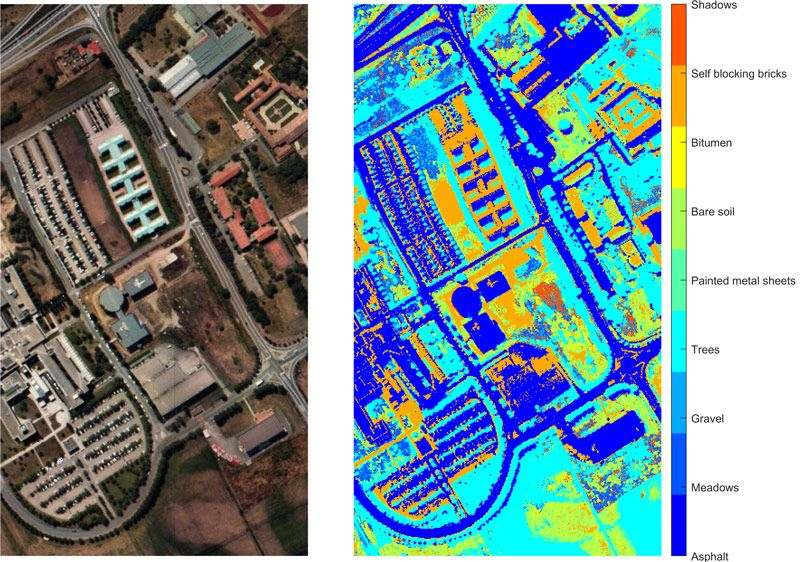

Matrices tridimensionales
Esta es la primera página de la documentación. Aquí puedes incluir información introductoria sobre tu proyecto, su propósito y cómo usarlo. Puedes agregar ejemplos de código, imágenes y cualquier otro contenido relevante para ayudar a los usuarios a comprender mejor tu proyecto. Puedes usar la sintaxis de reStructuredText para formatear el texto, crear listas, tablas y más. Aquí hay un ejemplo de una lista numerada:
Deacargar
Instalar
- Ejecutar «comando»
Configurar
Puedes usar la sintaxis de reStructuredText para formatear el texto, crear listas, tablas y más. Aquí hay un ejemplo de una lista numerada:
Primer elemento
Segundo elemento
Tercer elemento
También puedes incluir enlaces a otras páginas de la documentación o a recursos externos.
Nota
Esta es una nota importante que los «usuarios» deben tener en cuenta.
Advertencia
Esta es una advertencia que los usuarios deben considerar antes de continuar.
Truco
Este es un consejo útil para los usuarios. Puedes usarlo para resaltar información importante o sugerencias.
Error
Este es un mensaje de error que indica un problema con el código o la configuración. Asegúrate de solucionarlo antes de continuar.
Ver también
Para más información, consulta la sección de ejemplos en la documentación. Ejemplos
Ejemplo
Este es un ejemplo de cómo usar la función mi_funcion en tu código:
Asegúrate de seguir

{kind=link}

Ejemplo: Texto alternativo para la imagen.